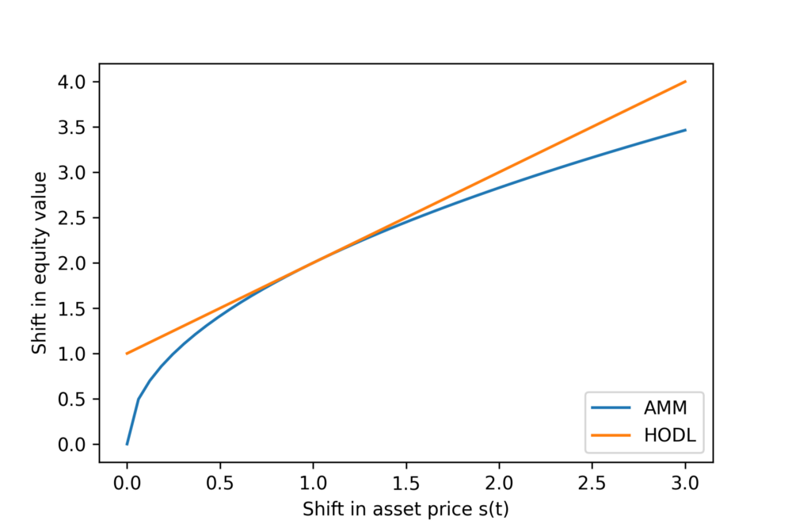
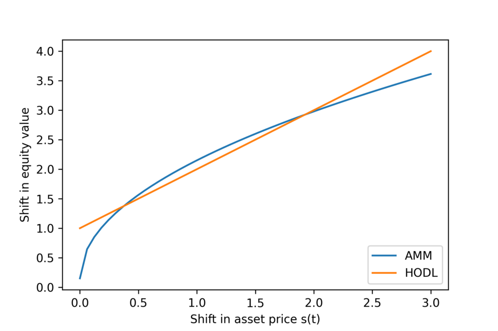
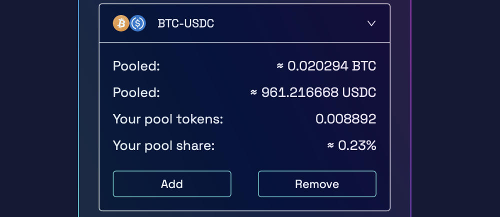

AMMs explained
1 January 2022
The easiest way to understand AMMs is in terms of equations. Formally stated, the question is: what is the relationship between the value of your investment and the various ways in which the world could change? Equations of state, in this case, relate various market signals (usually asset prices) to the value of your portfolio, commonly called "equity value."Toy example
The simplest investment is buying an asset, in which case your equity value is the value of the asset.The equation of state in this case is straightforward: where v(t) is your equity value, p(t) is the price of the asset, and a is the amount of asset you hold. If you're continuously buying, then a picks up a time dependance and becomes a(t).
One of the most confusing aspects of AMMs, in my opinion, is that there is no a priori reason for them behaving the way they do. The inventor of UniSwap, the first AMM, simply chose to program it a certain way such that it manifested a key property, but they could have programmed it an infinite number of ways that also would have achieved that property. This key property, which distinguishes good markets from bad ones, is that arbitrage has the effect of bringing cross-market prices closer together rather than farther apart; e.g. if Bitcoin is selling for $10 on Coinbase and $12 on UniSwap, then rational investor behavior will lower the price of Bitcoin on UniSwap.
How UniSwap chose to program their market, and keep in mind this is only one of an infinite set of market designs, is as follows.
The math governing AMMs
In this situation, we're supposing you want to make a market between Bitcoin (BTC) and USD. Let's define some variables: Here are the governing equations of the market; the ones that UniSwap chose out of an infinite set of governing equations (yes, I'm going to keep repeating this point because it's important): where c is a constant determined by the initial conditions of the pool.If you're creating the pool, you get to choose the starting quantities of a and b. The second condition provides a single constraint on those quantities, because you'll want to make sure that p(t) matches the price of Bitcoin on other markets. The remaining degree of freedom in the system can be physically understood as the total value of the pool, or your equity value. At time t=0, the pool is created, and our equation of state is: we can apply condition 2 to simplify this which states that your equity value is two times the amount of USD deposited into the pool. The real question is: what is the relationship between v(t) and p(t)? i.e. how does your equity value change as the asset price changes? Well, let's continue our mathematical analysis. FYI I'm dropping the explicit time-dependance of our variables for aesthetics. and since we know it follows that we can put this in a more illuminating form however with a few extra steps, so bear with me. First, let's define so that our equation of state becomes
 finally, let's define
which physically represents the shift in asset price as a function of time. Fundamentally, this is the variable we'll care about. We'll see that the absolute price of Bitcoin doesn't really matter, but that the change in the price of Bitcoin is what determines our equity value. We can rewrite our equation of state using this new definition:
we see though that this is equivalent to
for reasons that will become apparent later, let's rewrite this as
finally, let's define
which physically represents the shift in asset price as a function of time. Fundamentally, this is the variable we'll care about. We'll see that the absolute price of Bitcoin doesn't really matter, but that the change in the price of Bitcoin is what determines our equity value. We can rewrite our equation of state using this new definition:
we see though that this is equivalent to
for reasons that will become apparent later, let's rewrite this as
 This is our final equation! It states that our equity value is equal to our initial investment times the square root of the shift in asset price! Hmm, interesting. So, basically, we're long on the asset, but with a slightly different profile than just buying and holding. What would have been our equity value if instead of putting our money into an AMM we had just HODLed our Bitcoin instead?
This is our final equation! It states that our equity value is equal to our initial investment times the square root of the shift in asset price! Hmm, interesting. So, basically, we're long on the asset, but with a slightly different profile than just buying and holding. What would have been our equity value if instead of putting our money into an AMM we had just HODLed our Bitcoin instead?
Math for the HODLers
Same premise as before:
 now here's where things change, because we no longer have to adhere to the governing equations of the AMM.
Since we've chosen to HODL, b(t)=b(0) and a(t)=a(0), so we have:
but we know p(0)a(0) = b(0), which means
This is great! Now we can directly compare the equity value of HODLing to the equity value of pooling in an AMM!
now here's where things change, because we no longer have to adhere to the governing equations of the AMM.
Since we've chosen to HODL, b(t)=b(0) and a(t)=a(0), so we have:
but we know p(0)a(0) = b(0), which means
This is great! Now we can directly compare the equity value of HODLing to the equity value of pooling in an AMM! Are you better off pooling in an AMM or HODLing?
Now that we have equations of state for both scenarios, this question is easy to answer. First, let's look at a graph of these two functions:  For this plot, I chose b(0) to be 1. A visual inspection is enough to tell us that no matter which way the asset price changes, you're better off holding your cryptocurrency instead of pooling it. This is the feature of AMMs commonly called "impermanent loss," which I think is somewhat of a misnomer because if you exit the position at any point other than when the price is equal to when you entered, you've lost money permanently.If you choose to pool, your equity value certainly increases if the asset price goes up, but your equity value would've been greater had you just held the asset. Additionally, note that with holding, your equity value will never decrease beyond half your initial investment. This tracks because we've chosen to value everything in terms of USD, and half our investment was simply holding USD.
In the pooling scenario, if the asset price goes to zero, you stand to lose all your money. Yikes. We'll explore exactly why this is the case later, but first, because I'm a physicist by training, I'd like to prove with rigor that the HODL equity value is always greater than AMM. To do this, it suffices to show that: since both sides carry a factor of b(0), let's ditch it now let's bring the right term over to the left the astute mathematician will notice that the left hand side can be rewritten as follows: and this concludes our proof! QED! The square of any real number — thankfully we're only dealing with real numbers here — is strictly positive, so the equality has to hold for any value of s(t).
What does it all mean?
We've seen the numbers, we've seen the graphs, but this article wouldn't be complete without some discussion about the physical meaning of the equations we've uncovered.The asset price
So far, we have been treating the asset price as an independent variable. In reality, the asset price in an AMM pool is a uniquely determined by the construction of the pool. When creating a pool, you select the amount of asset A and asset B (usually USD) to put in the pool, and then the price is determined according to the ratio between the two. Consequently, you'll have to be careful when constructing a pool because if you mis-price the asset you'll lose money to impermanent loss when the price equilibrates with the rest of the market.Where your money goes
Suppose the market price of Bitcoin is $4 and you want to make a pool. You choose to put in 4 USD and 1 BTC, for a total investment of $8. Sometime later, market forces drive the price of bitcoin to zero. In this case, clever capitalists will realize that your pool is mis-pricing bitcoin, and they'll deposit infinity bitcoin into the pool in exchange for all the USD (the price of bitcoin will asymptotically approach zero, so they'll need infinite bitcoin to truly get all your USD). Conversely, if the price of bitcoin goes to infinity, people will deposit infinity dollars in exchange for your single bitcoin. Your equity value will be infinity, no doubt, but if you had held the assets instead your equity value would have been infinity plus $4.More realistically, suppose that the price of Bitcoin drops to $1. If you had held the assets ($4 and 1 BTC), your equity value would've dropped from $8 to $5. Instead, here's what happens: someone deposits 1 BTC into the pool and in exchange receives $2. Wait, shouldn't they have received $4, because your pool had priced Bitcoin at $4? If that had happened, the new state of the pool would be $0 and 2 BTC, which is clearly in violation of the first governing equation for AMMs. Our initial state was $4 and 1 BTC, so our multiplicative constant c is equal to 4. This means if someone deposits 1 BTC, they observe an effective price of $2 per Bitcoin, not $4 (AMMs refer to this as "price slip" and warn you about it if you try to perform a swap large relative to the total pool value).
The new stable state for the pool is $2 and 2 BTC (because two times two is four). In this new configuration, Bitcoin is priced at $1, in accordance with the market, and rational investors will stop swapping with the pool. Your equity value is now $4, which is $1 less than if you had held the assets. That missing dollar was taken as profit by the person who swapped 1 BTC for $2.
Finally, suppose that the market price of Bitcoin remains at $4 but someone decides to swap 1 BTC into your pool anyways. As we've seen, they'll get $2 out and your pool will now hold $2 and 2 BTC. Your equity value in this case, however, is now $10 (because BTC is still worth $4), which is $2 more than when you started. Evidently, your profit has come at the expense of the swapper, who foolishly exchanged something worth $4 for $2, loosing $2 in the process. Note that only irrational investor behavior allows you to make money by pooling.
In reality, you'll never see a situation like any of these because asset prices change continuously and arbitrage is performed on an ongoing basis. The way to interpret impermanent loss is that arbitragers slowly erode your equity value every time the market price changes. If the price ever goes back to where it was when you started the pool, your equity value is returned to you at the expense of other markets.
AMM swap fees
I've been using the word "investment" this whole time, but in all of the examples I've given there's been a whole lot of downside and no upside. The programmers of AMMs are aware of this, so they typically incentivize people to pool their money by including a fee, which goes to the pooler, every time someone exchanges with the pool. Typically this fee ranges between 0.2% and 0.3%. This has the effect of changing the pooling equity value as follows: where f(t) is the value of fees you've accumulated. If f(t) is high enough, it can transform pooling into an attractive investment opportunity relative to HODLing. The graph comparing the two now looks like:  In this scenario, you stand to make money from pooling so long as the asset stays between ~0.4x and ~1.9x of its original price. Visually, the amount of money you make relative to holding is represented by the vertical distance between the blue and orange lines. As one would expect, you make the most money relative to holding when the asset price doesn't change at all.An actual pooling strategy
To close out this article, I'm going to share with you the strategy that I use when evaluating pooling opportunities. If you've followed the math up until this point, my strategy should read simply as common sense.Step 1: Get the data
Through some sleuthing, I've found open API links for Raydium and Orca, which is where I do most of my pooling. I don't really use Ethereum on principle (the gas fees are ridiculous compared to Solana), but I'm sure the Ethereum AMMs have similar API links. I use the following python code to get the raw data from the sites:
import requests
import json
response = requests.get("https://api.raydium.io/pairs")
raw = json.loads(response.text)
response2 = requests.get("https://api.orca.so/pools")
raw2 = json.loads(response2.text)
The return values, raw and raw2, are dictionaries containing various parameters of all the pools created on the site. There are only four quantities I care about: liquidity, volume_24h, volume_7d, and price.
Step 2: Determine swap dollars processed per dollar pooled
My end goal is to try to figure out how much I'll make in fees over a given period of time. Once I have that information, I can generate a model for f(t) and, in turn, v(t).
When I deposit my assets into a pool, I receive in exchange some LP (liquidity provider) tokens which represent my share of the pool. For example, I recently added $2000 to the BTC-USDC pool and received in exchange 0.008892 LP tokens, representing a 0.23% stake in the pool. Here's what Raydium shows me:  (As a fun little exercise, I can use my current equity value to back-calculate that the price of Bitcoin is now 0.924 — $1922 / $2000 squared — times what it was when I first deposited into the pool.)
I typically assume that f(t) has the following form: where alpha is the percentage you make on each swap, gamma is the swap volume in the pool, and L is the liquidity of the pool. In reality, gamma fluctuates depending on the volatility of the asset (when it's changing price quickly, more people are using the pool to try and get in on the arbitrage action), but I usually approximate it as a constant. I calculate this constant using a weighted average of the 24-hour volume and the 7-day volume. This model for f(t) says a few things:
- You make less in fees the larger the liquidity of the pool. This makes sense because your investment buys less ownership percentage in larger pools than smaller ones.
- You make more when trading volume is higher. Every swap that happens in the pool pays a percentage to you, so more swaps means more money.
Step 3: Estimate return
Once I have a decent sense of f(t) for a given pool, I plug it into the equation for v(t) and estimate my return. Let's use the RAY-USDC pair from above as an example. If I invest $1 into this pool, then my equation of state is:
 If instead I use that dollar to buy and hold $0.50 of RAY and $0.50 of USDC, my equation of state is:
I view yield farming as a cashflow business rather than an equity investment, so most of the time I pick assets that will remain roughly constant in price. I typically hold positions for no more than a week and try to time my exit so that the price is similar to what it was when I entered the position. This allows me to set s(t) to one, so my RAY-USDC equation is:
If I farm for a week, then t = 7 and my return is $1.01715. That's a 1.7% return over a week. If that doesn't sound like a lot to you, then you need to review your compound interest formulas. In terms of APY, we get:
That's an APY of 142%! Of course, this yearly return is conditional on you finding attractive farming opportunities week after week. You'd be hard pressed to actually achieve an APY of 142%, so I normally think of positions in terms of their weekly return. Anything in the 0.5%-1% range is attractive enough for me to seriously consider it.
If instead I use that dollar to buy and hold $0.50 of RAY and $0.50 of USDC, my equation of state is:
I view yield farming as a cashflow business rather than an equity investment, so most of the time I pick assets that will remain roughly constant in price. I typically hold positions for no more than a week and try to time my exit so that the price is similar to what it was when I entered the position. This allows me to set s(t) to one, so my RAY-USDC equation is:
If I farm for a week, then t = 7 and my return is $1.01715. That's a 1.7% return over a week. If that doesn't sound like a lot to you, then you need to review your compound interest formulas. In terms of APY, we get:
That's an APY of 142%! Of course, this yearly return is conditional on you finding attractive farming opportunities week after week. You'd be hard pressed to actually achieve an APY of 142%, so I normally think of positions in terms of their weekly return. Anything in the 0.5%-1% range is attractive enough for me to seriously consider it. Personally, I would not farm the RAY-USDC pool because I don't want to be long on RAY. I had a small scare farming the SAMO-USDC pool in October and that's turned me off of coins I wouldn't otherwise invest in. My rational breaks down as follows:
- If I'm bullish on the coin (Bitcoin, Ethereum, Solana) then the math tells me I'm better of HODLing than farming.
- If the coin sucks (SAMO, I'm looking you) then I should stay away from it entirely.
- If the coin seems fine but doesn't seem like it will generate great returns from HODLing, then it's ripe for farming.
In conclusion
Farm if you want, or don't. Hopefully this mathematical treatment of AMMs has given you some tools for your toolbox. I've found that the APYs listed on pooling sites can be incredibly misleading and/or falsified, so it's important to be able to perform this sort of analysis for yourself.My current view on farming is that it's not worth the effort in 99.9% of situations. Now, leveraged yield farming, on the other hand, I have a much more rosy view on. The math behind that is considerably more complicated, but worth understanding if you're thinking of doing it. If you use LYF correctly, you can get low-risk* APYs in the thousands of percent (low-risk conditional on you knowing what your doing). The killer feature of LYF is that you can create delta-neutral positions where your returns are relatively independent of s(t). Maybe I'll cover the math behind that in a future post.